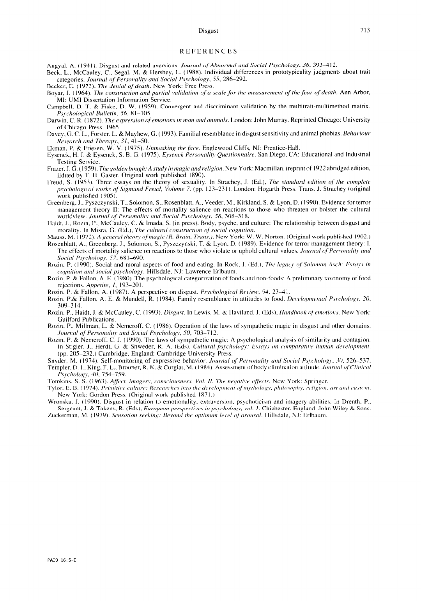

Disgust
713
REFERENCES
Angyal. A. ( I94 I ). Disgust and related aversions. Journrrl of Abnormal md Socictl Psyhology, 36, 3934 12.
Beck, L.. McCauley. C., Segal, M. & Hershey, L. (1988). Individual differences in prototypicality judgments about trait
categories. Joumcrl of Personality and So&/ Psychology, 55. 286-292.
Becker. E. (1973). The denirtl of deurh. New York: Free Press.
Boyar, J. ( 1964). The ~~omtru&m cmd purtiul vulidrttion of n scct/e,for the measuremettt of thr,frctr of death. Ann Arbor,
Ml: UMI Dissertation Information Service.
Campbell. D. T. & Fiske. D. W. (1959). Convergent and discriminant validation by the multitrait-multimethod matrix.
Ps~cho/qiccr/ Bu//rtitr, 56, 8 I-105.
Darwin, C. R. ( 1872). The repression ofrmotion.\ in mcm and rmimtr/,s. London: John Murray. Reprinted Chicago: University
of Chicago Press, 1965.
Davey. Cl. C. L., Forster, L. & Mayhew, G. ( 1993). Familial resemblance in disgust sensitivity and animal phobias. Rehcnktr
Rrsrorch rmd Therctl?\, 3 I, 4 I-50.
Ekman, P. & Friesen. W. V. (1975). C/nmct.skin~ the face. Englewood Cliffs, NJ: Prentice-Hall.
Eysenck. H. J. & Eysenck, S. B. G. (1975). E~serzck Personctlit~ Questiormrrire. San Diego. CA: Educational and Industrial
Testing Service.
Frazer, J. G. ( 1959). The&den bough: A study in magic and religion. New York: Macmillan. (reprint of I922 abridged edition,
Edited by T. H. Caster. Original work published 1890).
Freud, S. (1953). Three essays on the theory of sexuality. In Strachey, J. (Ed.). The .stnndctrd edition of the cvmp/rtr
p.s~?‘./2o/o~ic.tr/ k\vrk.s of Sigmund Freud, Volume 7. (pp. 123-23 I ). London: Hogarth Press. Trans. J. Strachey (original
work published 190.5).
Greenberg, J., Pyszczynski, T., Solomon, S., Rosenblatt, A., Veeder, M., Kirkland. S. & Lyon. D. (1990). Evidence for terror
management theory II: The effects of mortality salience on reactions to those who threaten or bolster the cultural
worldview. Jounto/ of Per.sonct/ity trnd Socictl Pvxcho/o,yy, 58, 308-3 18.
Haidt. J.. Rorin, P., McCauley, C. & Imada, S. (in press). Body. psyche. and culture: The relationship between disgust and
morality. In Misra, G. (Ed.), The culturul construction of socictl coptitiort.
Mauss. M. ( 1972). A generttl theor:\ of mcrgic (R. Rrctin. Trams.). New York: W. W. Norton. (Original work published 1902.)
Rosenblatt. A., Greenberg, J., Solomon, S., Pyszczynski, T. & Lyon, D. (1989). Evidence for terror management theory: I.
The effects of mortality salience on reactions to those who violate or uphold cultural values. Journcd of Per.vona/i!\. trnd
Soc,itr/ P.sycho/ogy, 57, 68 I-690.
Rozin. P. ( 1990). Social and moral aspects of food and eating. In Rock, I. (Ed.), The /e,qtrc;v of Solomort Aw/I: Ew/~.s it1
cognition WU/ tocitrl /x~cho/o~,~. Hillsdale, NJ: Lawrence Erlbaum.
Rozin. P. & Fallon, A. E. (1980). The psychological categorization of foods and non-foods: A preliminary taxonomy of food
rejections. Appetite, 1. 193-201.
Rozin, P. & Fallon, A. ( 1987). A perspective on disgust. P.s~cho/o,qiccd Rr~aierc,, 94. 234 I.
Rozin, P.& Fallon. A. E. & Mandell, R. (1984). Family resemblance in attitudes to food. I)c,~,r/o/“n~‘~t”/ PvJcho/ocqy, 20.
X)9%3 14.
Rozin. P., Haidt, J. & McCauley. C. (I 993). Disgt~.vt. In Lewis, M. & Haviland. J. (Eds). Htmdhook of rmotiorrs. New York:
Guilford Publications.
Rozin, P.. Millman, L. & Nemeroff, C. (1986). Operation of the laws of sympathetic magic in disgust and other domains.
Journtrl of Prrc-onttlity cmd Sock/ Psychology, 50, 703-7 12.
Rosin, P. & Nemeroff. C. J. (I 990). The laws of sympathetic magic: A psychological analysis of similarity and contagion.
In Stigler, J.. Herdt. G. & Shweder, R. A. (Eds). Culturttl pqc~ho/o,~~: E.wI~.Y 012 cornpor~rti~v hrrrrm~~ t/‘~,c,/~)/“““~t.
(pp. 205-232.) Cambridge, England: Cambridge University Press.
Snyder. M. ( 1974). Self-monitoring of expressive behavior. Journtrl of Pe~vorrtr/it~ om/ .Soc,itr/ P.s~c~ho/o~~. .~I). S26&537.
Templer, D. I., King, F. L., Brooner. R. K. & Corgiat. M. ( 1984). Assessment of body elimination attitude. Jouruu/ ofC/irrictr/
Ps~choloRy. 40, lS4L759.
Tomkins. S. S. ( 1963 ). AfJtct. imtrgrry. ~~ot~.s~.io~~.v~~es.s. Vol. /I. The nrgrrti~~ uff~t\. New York: Springer.
Tyler. E. B. ( 1974). Primitive culture: Resecrrc1ze.s irlto the dr~~e/o/~me~~t of nlulro/o,y~. /~lrilo.~r~/~lr~. ra/i,yiorr. art orrtl crrvto~rr.
New York: Gordon Press. (Original work published I87 I .)
Wronska. J. (1990). Disgust in relation to emotionality, extraversion. psychoticism and imagery abilities. In Drenth, P.,
Sergeant, J. & Takens, R. (Eds), Europrm perspecti~cs irl p~ycho/o,y~~, LW/. I. Chichester. England: John Wiley & Sons.
Zucherman. M. ( 1979). .%~trtion tec&ng; &ymt/ the optim~tt /CLY,/ o/ trrorr.\o/. Hillsdale. NJ: Erlbaum.
PAID 16:5-E